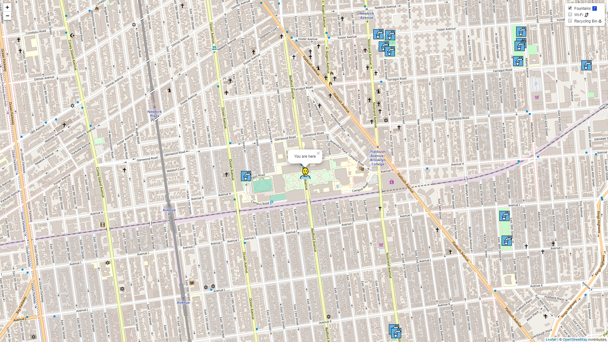
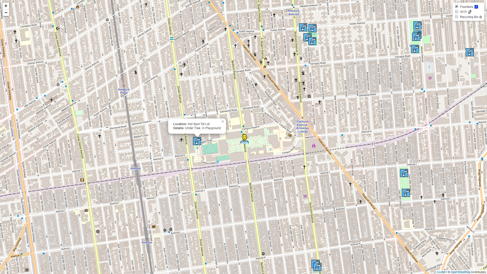
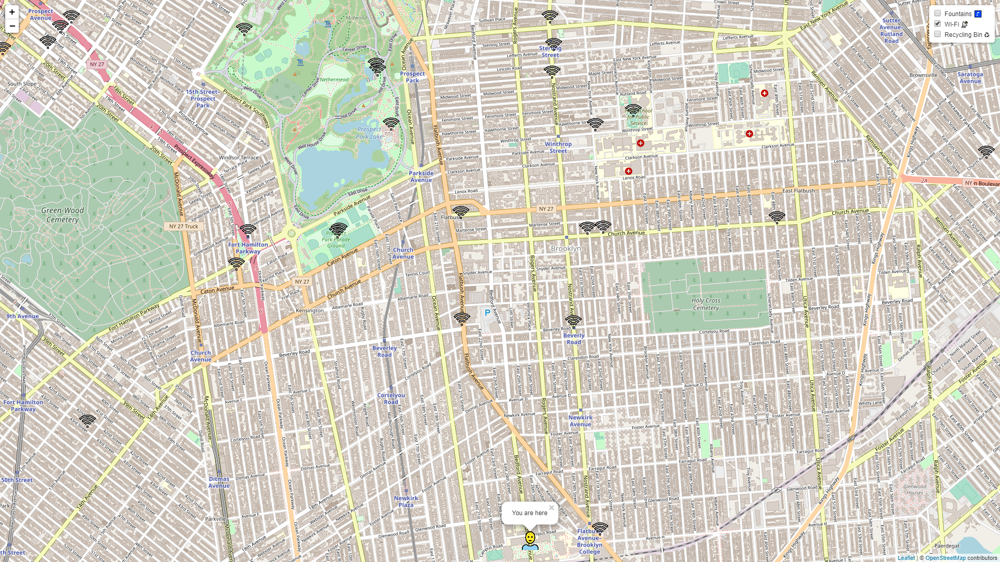
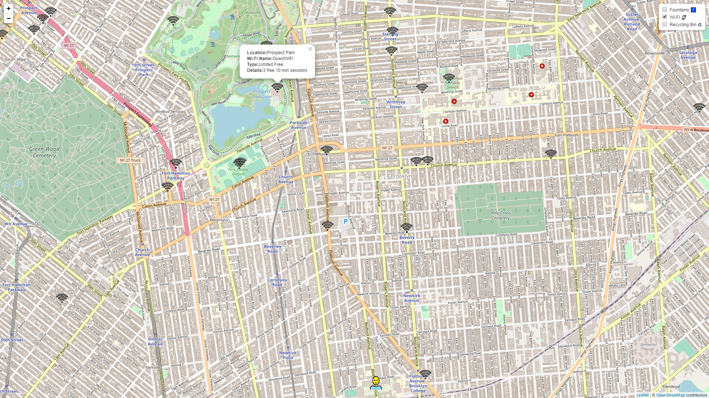
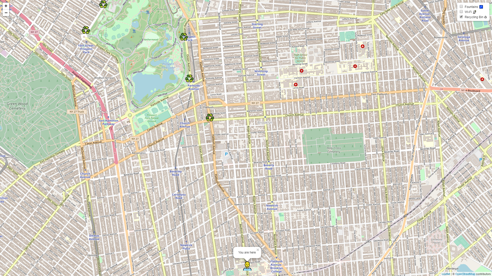
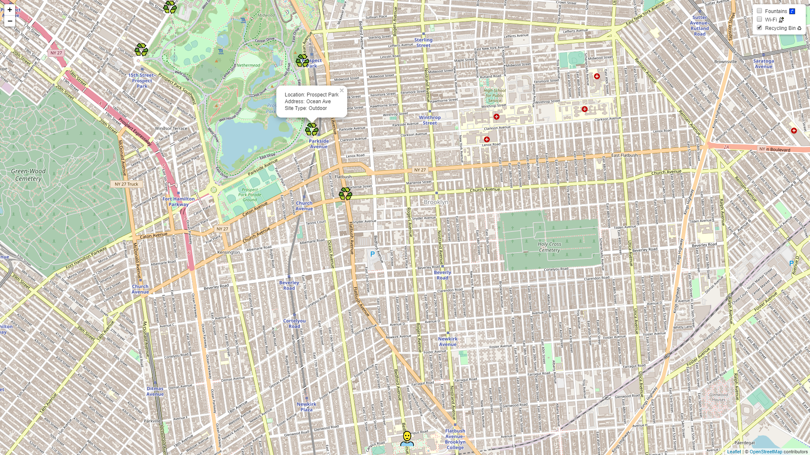
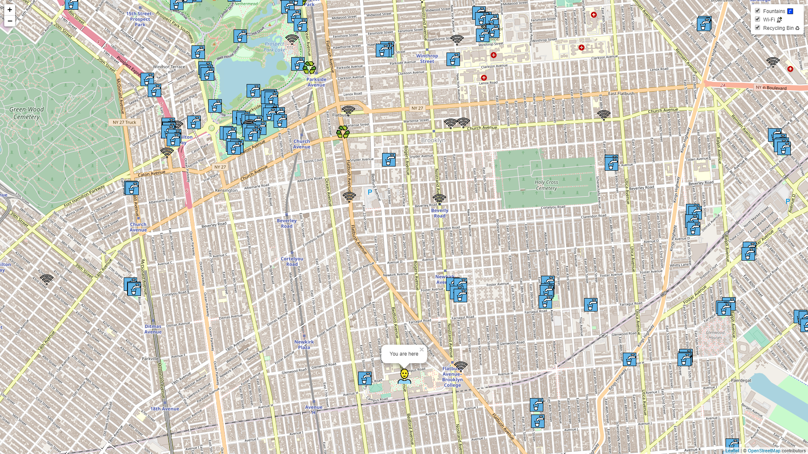

About UrbanResourceFinder

Fountain locations on a map

Fountain locations on a map
Fountain marker with description

Wi-Fi locations on a map

Wi-Fi locations on a map
Wi-Fi marker with description

Recycle bin locations on a map

Recycle bin locations on a map
Recycle bin marker with description

Multiple resource locations on a map
Previous
Next
What is UrbanResourceFinder?
UrbanResourceFinder(URF) is a web application that provides locations to your nearest public necessities. At the moment these include water fountains, Wi-Fi hotspots, and recycling bins. More will be added in the future.
Who is UrbanResourceFinder for?
UrbanResourceFinder is built for everyone! Whether it be people who are new to the city to local urban individuals. URF can be a great assistant for active explorers of the urban settings.